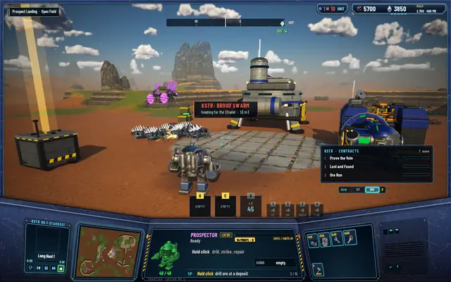
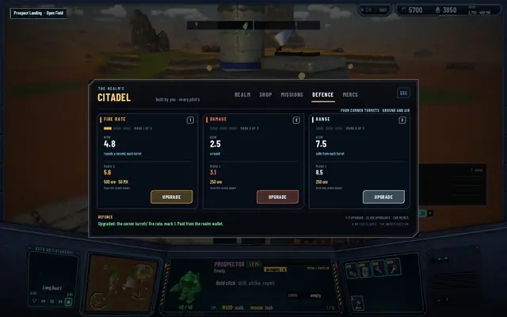
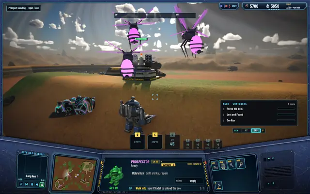
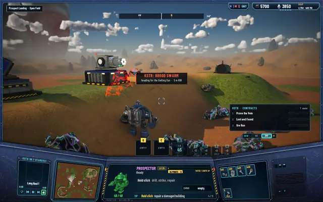
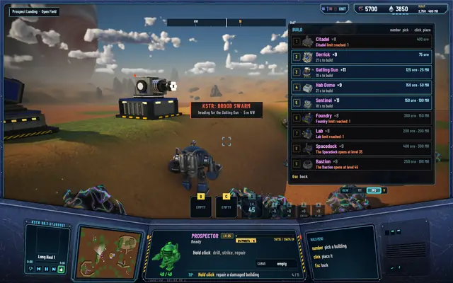
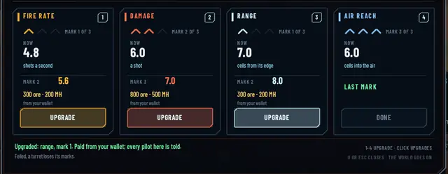
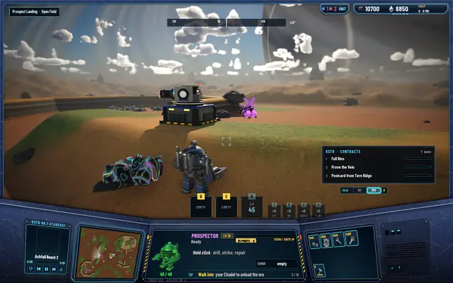
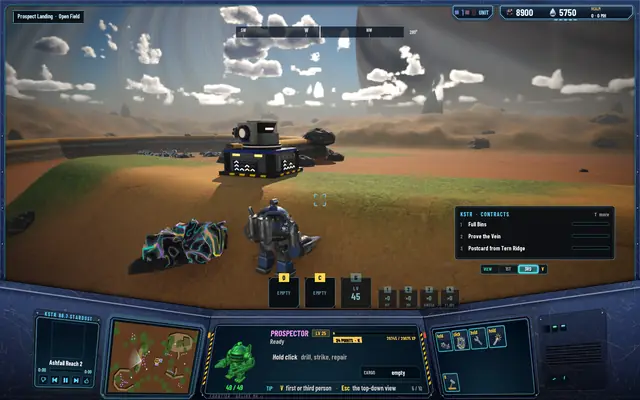
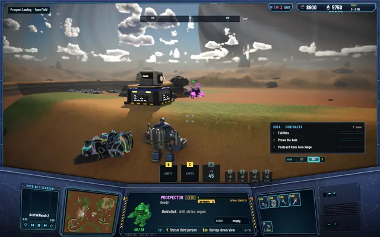

Guns for the realm: the Citadel shoots back
Since the Brood arrived, a pilot could only fight them with the Prospector's torch, and the torch was never meant to win a fight. Now the realm has guns: four on the Citadel, two kinds you build yourself, and upgrades for each one.

The Citadel fires back
Every Citadel now has four point-defence turrets, one on each corner pylon. They come with the building, cost nothing and need no blueprint. Each one is a rotary close-in gun that fires at bugs on the ground and in the air from 7.5 cells. One turret kills a Shardling in 2 seconds, and the four together clear a raid of eight Shardlings and three Gloamwings in about 10.
Their upgrades sit on a new DEFENCE tab at the Citadel (H). There are three marks each for fire rate (+20%), damage (+25%) and range (+1 cell). They're paid from the realm wallet, the one the 10% tax fills: 250 ore for a first mark, then 500 ore and 50 MH, then 1,000 ore and 150 MH. Any pilot can buy them, and everyone who unloads at the Citadel has helped pay.
Two turrets you build
The Sentinel is the AA tower, the strategy game's anti-air building brought into the world. Its missile pods shoot only at things in the air, from 7 cells, which is further than a Gloamwing can spit (4). Two volleys kill a Gloamwing. It opens at level 10 and costs 150 ore and 100 MH; the realm can have four.
The gatling gun is new. It fires red-hot rounds of amalgam, ore fused with Metallic Hydrogen, four shots a second for 16 damage a second, at the ground within 6 cells and at the air within 4.5, just past a Gloamwing's spit. A Shardling lasts 1.25 seconds in front of it, a pack of six about 8. It opens at level 5 and costs 125 ore and 25 MH; the realm can have six.
Both need a blueprint copy, like every building. Bugs that get shot turn on the turret that shot them, and whoever built it gets half the XP for the damage it does.
The guns, in the game

A raid on its way to the Citadel. The corner turrets are on its pylons.
The DEFENCE tab: fire rate at mark 1, the next mark 500 ore and 50 MH from the realm wallet.
Three Gloamwings over a Sentinel.
A swarm comes for the gatling gun. The red one is taking its rounds.
The build menu: Gatling Gun 125 ore and 25 MH, Sentinel 150 ore and 100 MH.


Marks on every turret
Every Sentinel and gatling gun you place takes marks too, three per stat, paid at the turret from your own wallet with no tax. Stand within 4 cells of it and press U: a card opens with the turret's kills and builder, and a column for each stat showing its marks, its value now and next, and the price.
- +20%fire rate a mark: a gatling's 4 shots a second become 6.4 at mark 3
- +25%damage a mark: 4 a round to 7
- +1 cellrange a mark: the gatling's ground reach 6 to 9
- 6 cellsthe gatling's air reach at mark 3, up from 4.5, still short of the Sentinel's 7
On a gatling gun every stat's marks cost 100 ore and 50 MH, then 300 and 200, then 800 and 500. A fully upgraded gun is 4,800 ore and 3,000 MH, about an hour and a half of pumping MH at a Derrick. A Sentinel costs half as much again per mark. Any pilot can upgrade any turret of the realm, since it defends everyone, and every pilot in the region hears who did. The marks show on the turret itself: a plate of chevrons at the front and back of its base, lit amber for fire rate, ember for damage, ice for range and sky blue for air reach.
A turret that falls loses its marks and its kills, with no refund, and a new one built in its place starts bare. That rule is there for the canyon, where the Matriarch will come to flatten the turrets when the pilots lose a wave.
The turret card

A gatling gun after seven marks: air reach is full at 6 cells, damage's next mark is 800 ore and 500 MH.

Before and after the marks

A bare gatling gun. The Gloamwing behind it hovers out of its 4.5-cell air reach.
The same gun after its marks: the chevrons are lit on its base.
With its air reach at 6, the gun hits the same Gloamwing.


What isn't right yet
The gatling gun in the pictures is a blockout, not the painted forge from the concept post. The Citadel's corner turrets read small from the ground, and the amalgam rounds don't draw their tracer streams yet. All three are on the list for the Brood's art pass. One bug turned up while building the upgrades: the client's pose table had room for nine building kinds, and the gatling gun is the tenth, so its head never turned and its barrels never spun. It's sized from the building list now, and the gun turns and fires.
Every test suite passes: 475 core, 219 server and 82 network.
Coming
The canyon. Some zones become canyons the Brood attacks in waves along set paths, and pilots hold them with these guns along the rims. Losing a wave brings the Matriarch, who fells every turret in the zone. She's in the world now, in her nest in Slag Pockets; the canyon and its waves are next.